ПРОЛОГ · ГАВАЙИ
1978
СПОР
СТАЛ СТАРТОМ.
15 участников вышли на первый старт. Победителем стал Гордон Халлер — с этого события началась история длинной дистанции.
Фото: karim.agaoua / Wikimedia Commons · CC BY-SA 2.0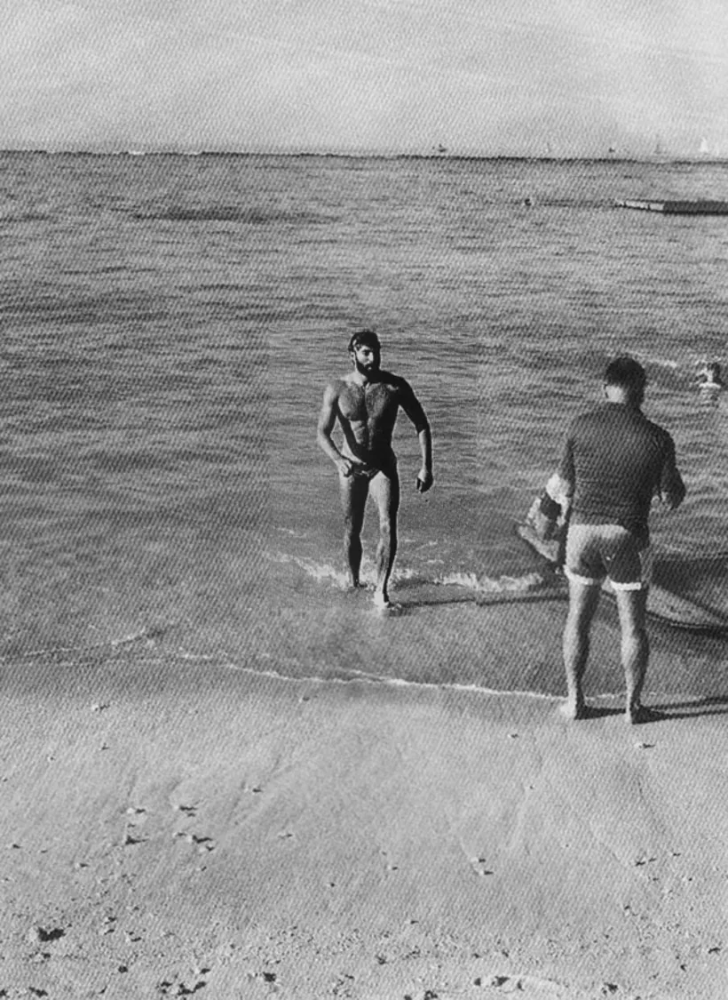
ИСТОРИЯ ДЛИННОЙ ДИСТАНЦИИ · 1987—2026
1987 — 2026
Три дисциплины.
Одна дистанция за пределом привычного.
ПРОЛОГ · ГАВАЙИ
1978
15 участников вышли на первый старт. Победителем стал Гордон Халлер — с этого события началась история длинной дистанции.
Фото: karim.agaoua / Wikimedia Commons · CC BY-SA 2.0
01 · SWIM
3,8 КМ
Заплыв открывает полную дистанцию. После него участник проходит транзитную зону и продолжает гонку на велосипеде — время не останавливается.
Фото: PH2 Jason R. Williams / U.S. Navy · общественное достояние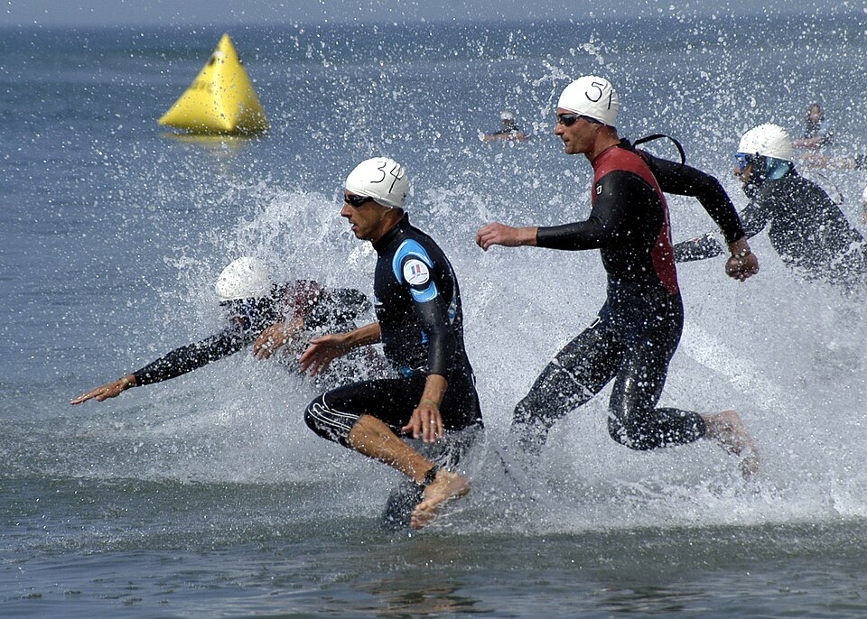
02 · BIKE
180 КМ
Самый длинный по километражу этап полной дистанции. Здесь важны устойчивый темп, питание и точное распределение сил до марафона.
Фото: Matthew Seely / Wikimedia Commons · CC BY-SA 4.0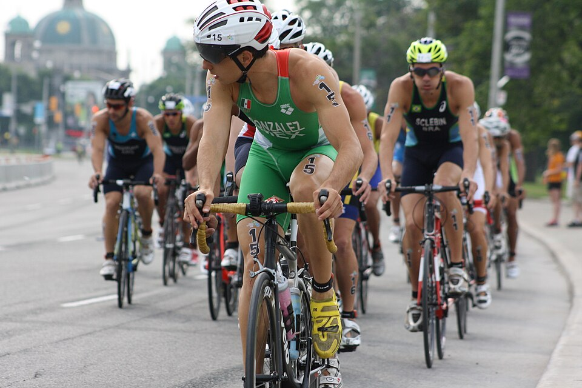
03 · RUN
42,195 КМ
Марафон начинается после плавания и 180 километров на велосипеде. Именно здесь часы гонки превращаются в проверку выдержки.
Фото: Graham Horn / Geograph · CC BY-SA 2.0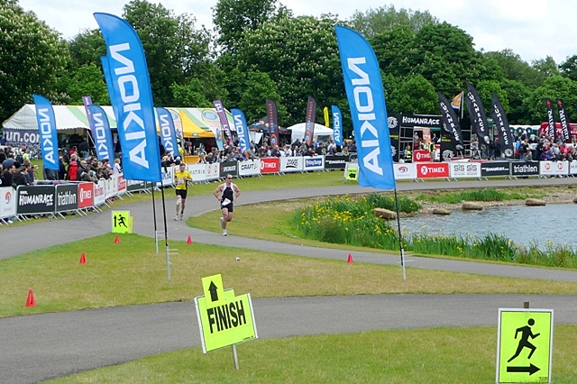
ASTANA · KAZAKHSTAN
2018
17 июня прошёл первый IRONMAN 70.3 Astana — первый старт серии в СНГ. Более 1 300 атлетов из 47 стран проплыли 1,9 км по Ишиму, проехали 90 км и пробежали 21,1 км.
Фото: Nikolamikovic82 / Wikimedia Commons · CC0 1.0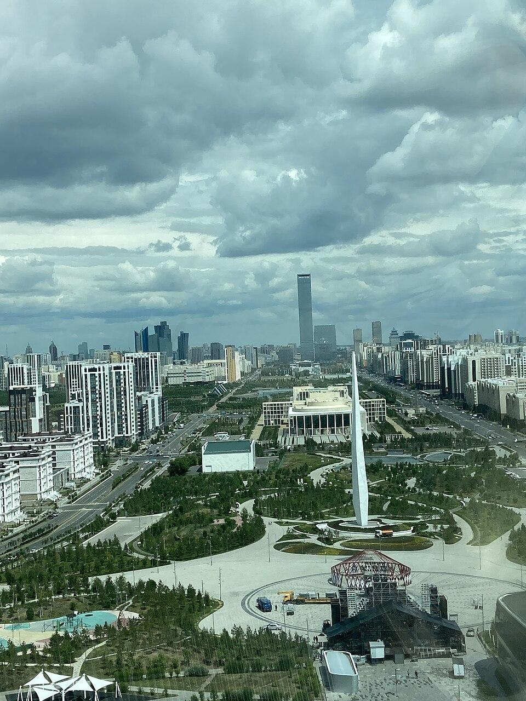
TRIATHLON PARK · ASTANA
3 ЭТАПА
Ишим, велотрасса и беговые улицы соединяют три дисциплины в центре Астаны. Это реальный вид Triathlon Park Astana — места старта и финиша.
Фото: Gfrc360 / Wikimedia Commons · CC BY-SA 4.0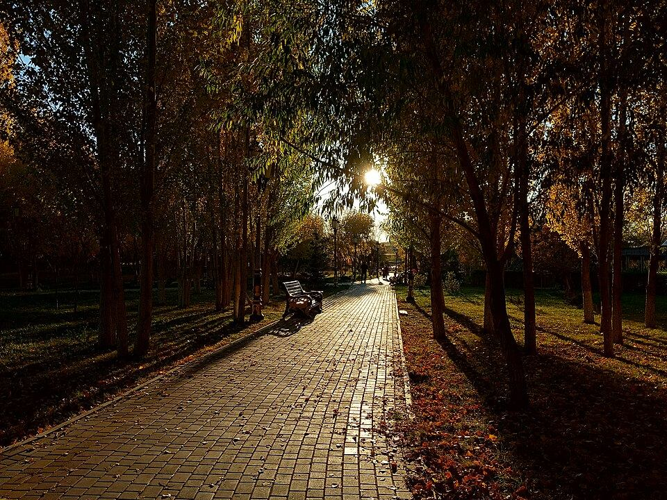
История длинного триатлона — это путь от спора на Гавайях до глобального испытания выносливости. Три вида спорта соединяются в один непрерывный маршрут.
ИССЛЕДОВАТЬ ИСТОРИЮ↘Стандартная полная дистанция: три этапа подряд, без остановки часов.
DISCIPLINE 02 / 180 KM
Наведите курсор — колёса ускорятся.
ЭКИПИРОВКА · ОДНО ТЕЛО
От открытой воды в гидрокостюме до финального марафона — наведите курсор на атлета, чтобы увидеть смену экипировки в реальном времени.
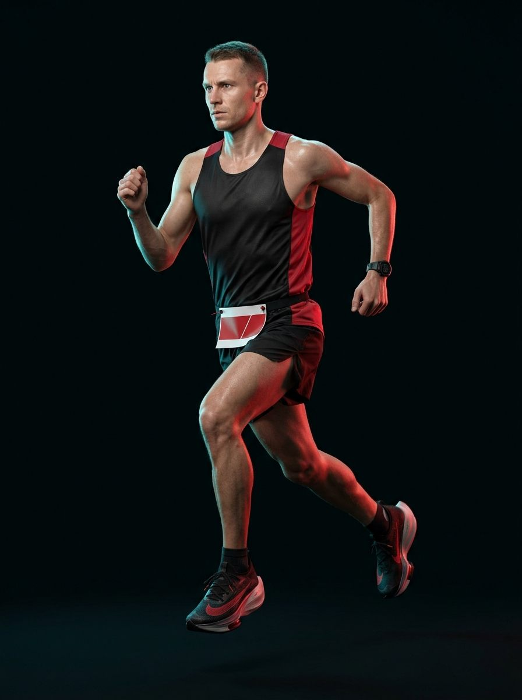
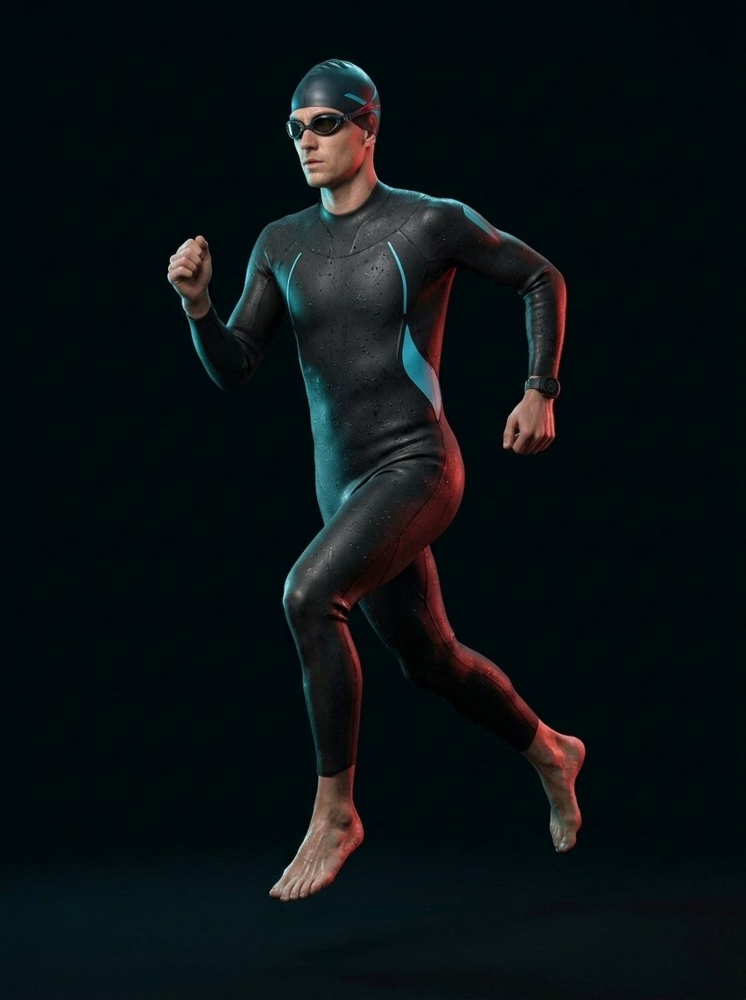
От гавайского пролога к соревнованиям по всему миру.
1978
На первый старт вышли 15 спортсменов. Победитель — Гордон Халлер.
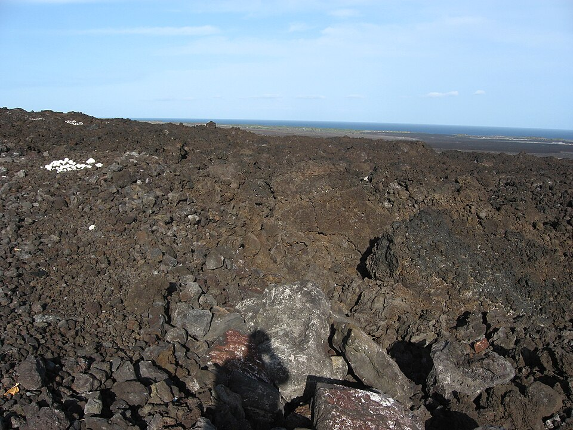
1981
Чемпионат переезжает на Большой остров Гавайи — к вулканическим дорогам и океану.
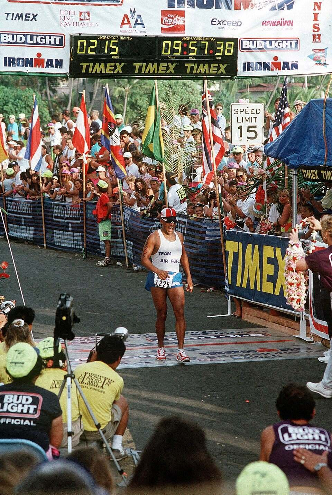
1982
Измождённая Джули Мосс доползает до финиша; в последние метры её обходит Кэтлин Маккартни. Кадр увидели зрители трансляции ABC.
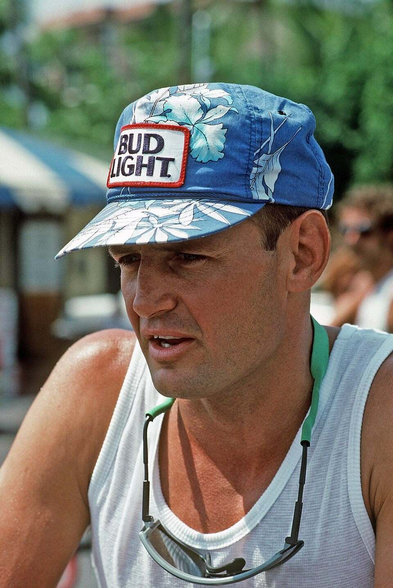
1987
Стартовали 1 381 участник, 1 283 уложились в лимит. Дэйв Скотт взял шестой титул, Эрин Бейкер установила женский рекорд трассы.
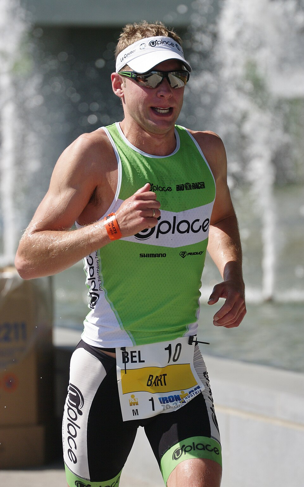
2006
Запускается бренд IRONMAN 70.3; в том же году проходит первый чемпионат мира в Клеруотере.
2018
Более 1 300 участников из 47 стран; победители — Peter Wolkowicz и Deirdre Casey.
2023
1 000+ атлетов из 60 стран; 30 слотов на чемпионат мира 70.3 в Лахти.
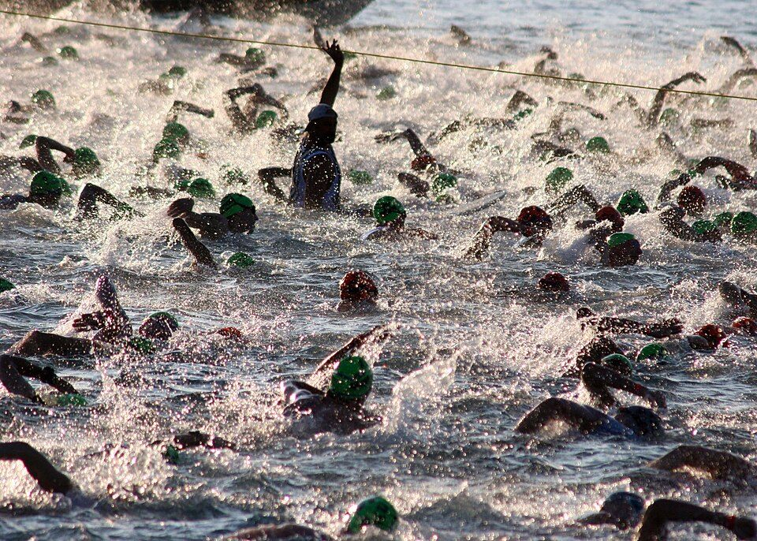
2026
Мужской и женский чемпионаты мира вновь проходят вместе в Коне.
Источники всех фотографий и проверенных исторических фактов собраны в assets/CREDITS.md.
Первый победитель, шестикратный чемпион и рекордсменка по числу титулов.
GORDON HALLER
1978 · ПЕРВЫЙ ПОБЕДИТЕЛЬ · 11:46:58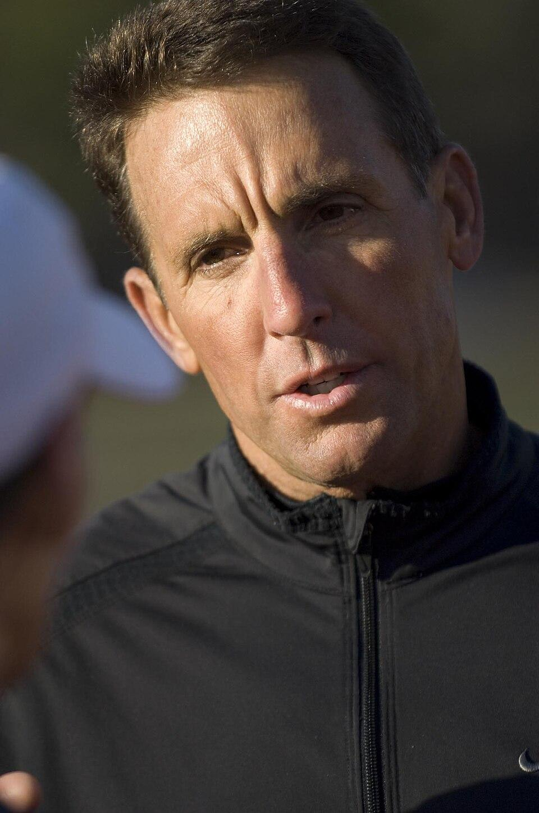
DAVE SCOTT
6-КРАТНЫЙ ЧЕМПИОН МИРА · ПОБЕДА 1987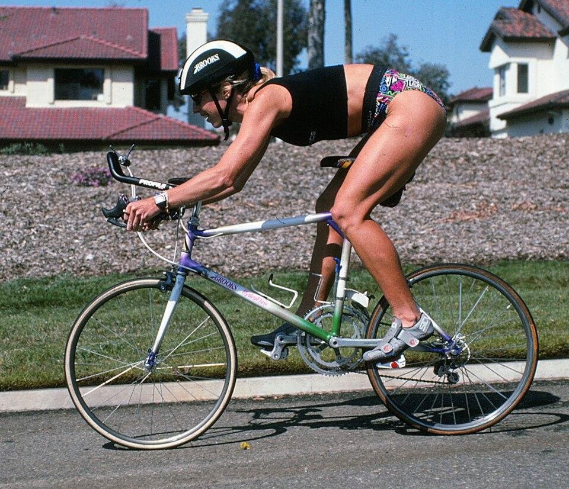
PAULA NEWBY-FRASER
8-КРАТНАЯ ЧЕМПИОНКА МИРАПоловина полной дистанции. Три этапа, один финиш.
★ IRONMAN В КАЗАХСТАНЕ
Три этапа вдоль Ишима и по улицам столицы.
СТАРТ / ФИНИШ · TRIATHLON PARK ASTANA
Карим Масимов, президент Казахстанской федерации триатлона, объявляет о первом в СНГ старте IRONMAN 70.3 в Астане.
Первый IRONMAN 70.3 Astana: заплыв в Ишиме — 1,9 км, велоэтап — 90 км, бег — 21,1 км. Победители: Peter Wolkowicz и Deirdre Casey.
Проводятся BI Group IRONMAN Kazakhstan и Freedom IRONMAN 70.3 Astana. Более 1 000 участников из 60 стран; 30 лучших в 70.3 получают слоты на чемпионат мира в Лахти.
Цифры и имена сверены по публикациям The Astana Times, Qazinform и материалам организаторов. Ссылки — в assets/CREDITS.md.
07 / ФИНИШНАЯ ЧЕРТА